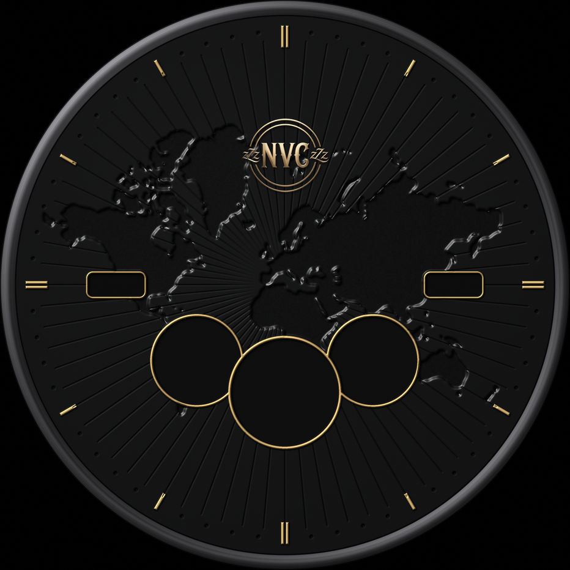

OnePlus Watch 3 · 466 × 466 · versión 4
Elegido: mapa en bajo relieve, glucosa en la sub-esfera central y logo un 25 % más pequeño. El selector sigue ahí por si quieres volver a comparar con el relieve. Los valores son de ejemplo.
Pantalla activaLo que ves al levantar la muñeca
Always-On DisplaySin fondo: contornos, logo atenuado y glucosa
Sub-esfera izquierda. La tocas y abre el entrenamiento que le asignes en el reloj.
Sub-esfera central, la mayor: valor, tendencia, aro según tu rango y minutos desde la lectura.
Sub-esfera derecha: icono y temperatura actual.
Ventana a las 3: día de la semana y del mes.
Ventana a las 9: porcentaje, que se vuelve rojo con la batería baja.

| Zona | Elemento en WFS | Dato |
|---|---|---|
| Fondo, mapa, índices, logo | Una sola imagen de fondo, 932 × 932 px | estático |
| Agujas | Analog Hands (imagen propia) | hora, minuto, segundo |
| 1 · Actividad | Complicación · Small Image / App Shortcut | la app que asignes en el reloj |
| 2 · Glucosa | Complicación · Ranged Value, por encima de las otras dos | tu app de glucosa |
| 3 · Tiempo | Complicación · Short Text con icono | proveedor meteorológico |
| 4 · Fecha | Text + Tag Expression | [DAY_WEEK_S] [DAY_1_31] |
| 5 · Batería | Text + Tag Expression, color condicional | [BATT_PER] · [BATT_IS_LOW] |
Tags comprobados en el propio Watch Face Studio 1.9.9.
Tres avisos. El aro de glucosa necesita una complicación de tipo Ranged Value: si tu app sólo ofrece Short Text, ese círculo queda en número y flecha. Al solaparse, la complicación central debe ir por encima en el orden de capas, para que el toque en la zona compartida abra la glucosa y no la de al lado. Y en Always-On hay un límite de píxeles encendidos, por eso ahí desaparece el fondo y el logo baja de brillo.